Thatching, decking and roof conversions across the Eastern Cape. Built to last, built with care.
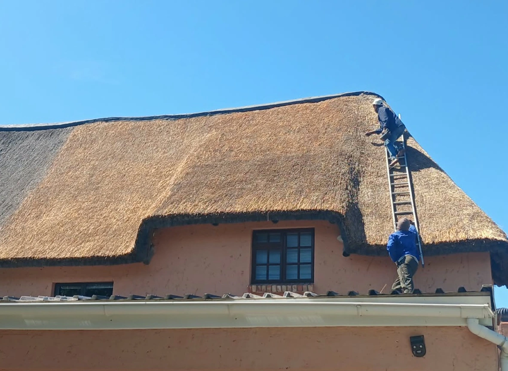
 Kei Cape Thatching & Decking
Kei Cape Thatching & Decking
Kei Cape Thatching & Decking specialises in thatching, decking and painting, bringing natural beauty and lasting quality to every project across the Eastern Cape. From new thatch roofs and lapas to timber decks and roof conversions, we build outdoor spaces that are made to last.
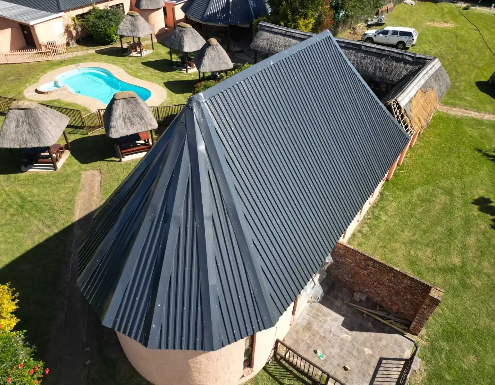
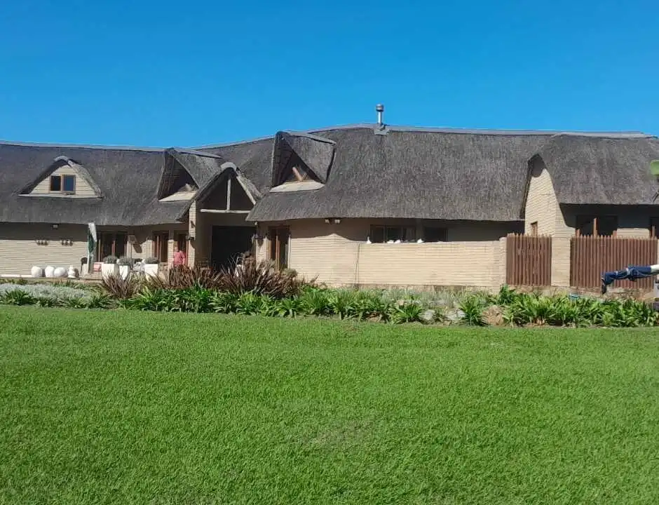
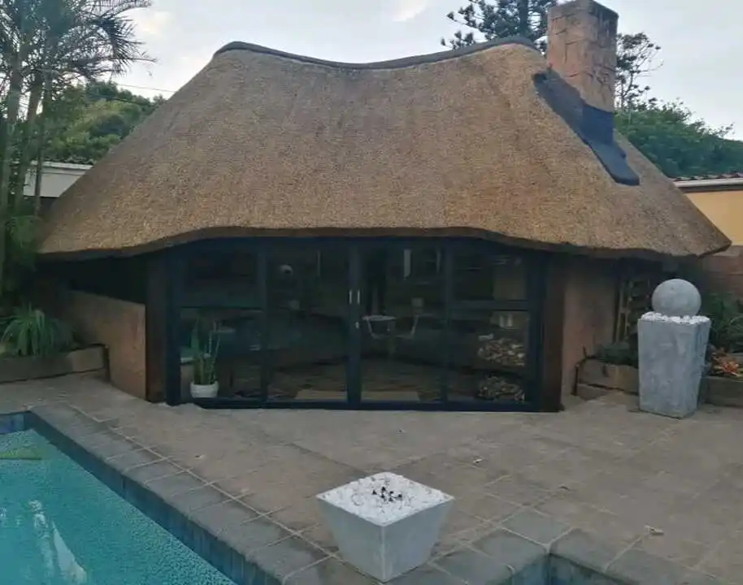
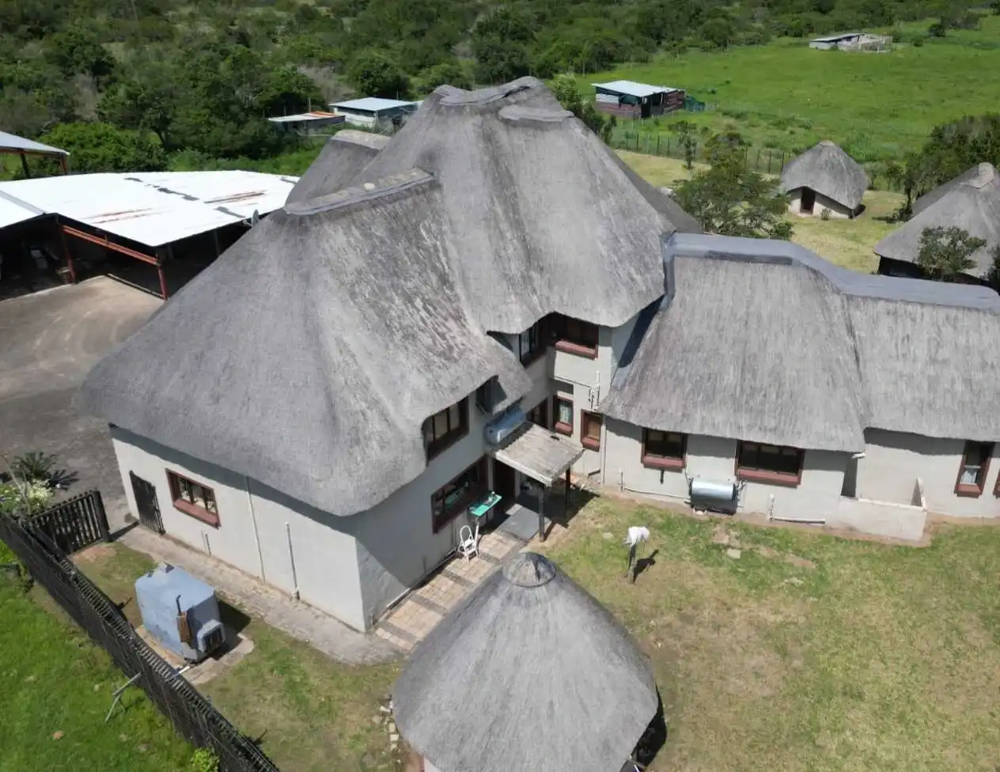
Thatching, decking, painting and roof conversions from one Eastern Cape specialist, with quality you can see in every detail.
New thatch roofs, re-thatching and maintenance. Natural material and careful finishing, built to last and built with care.
Thatched lapas and entertainment areas that extend your outdoor space and give your property its character.
Quality timber decking with a precision finish, plus painting to keep your outdoor areas looking their best.
From weather-worn to brand-new. We convert and restore roofs for a clean, professional finish that lasts.
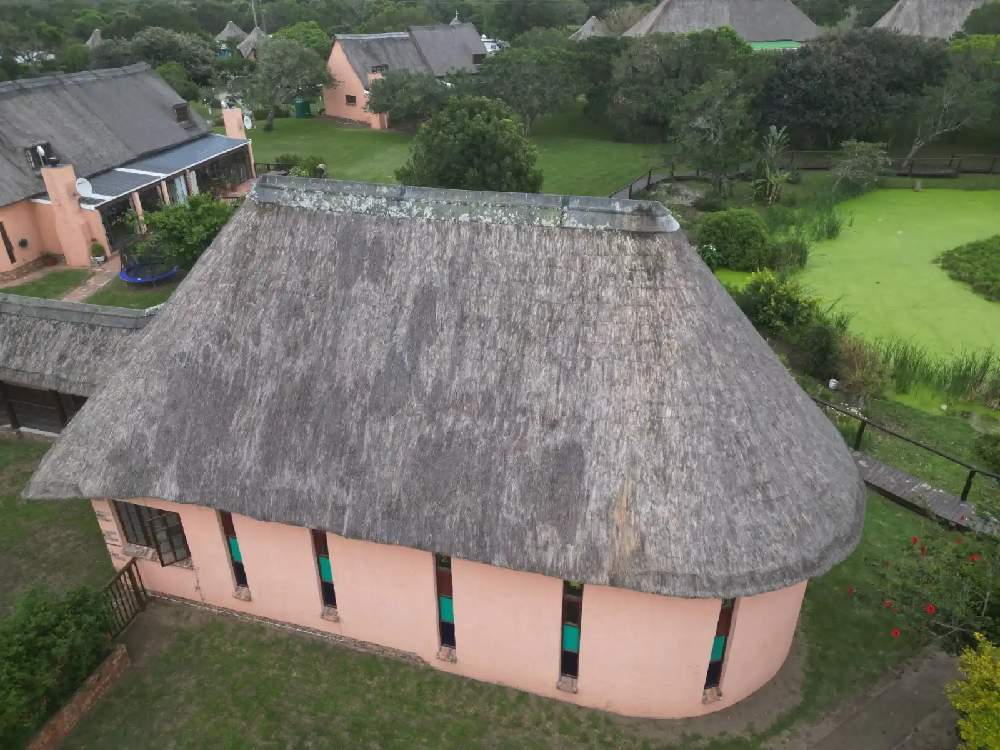
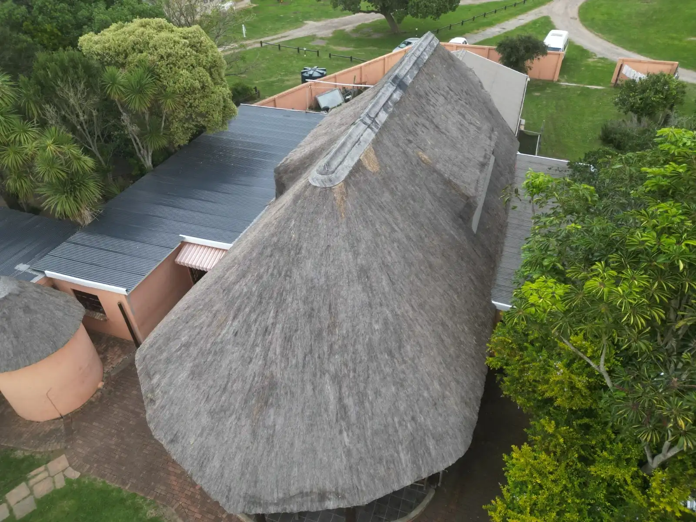
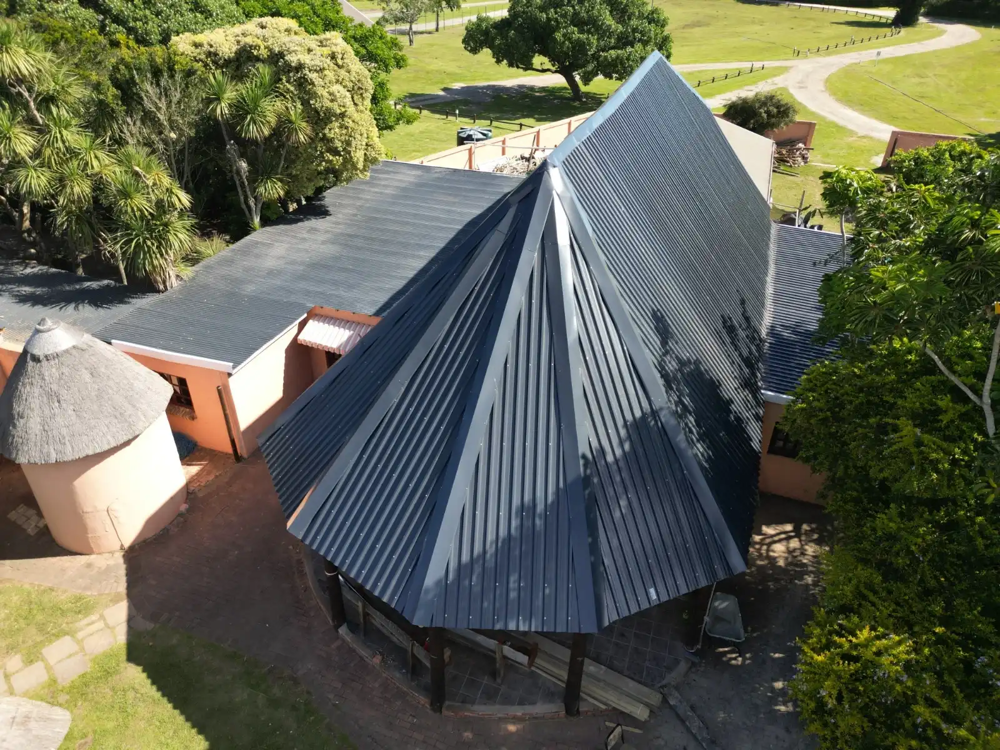
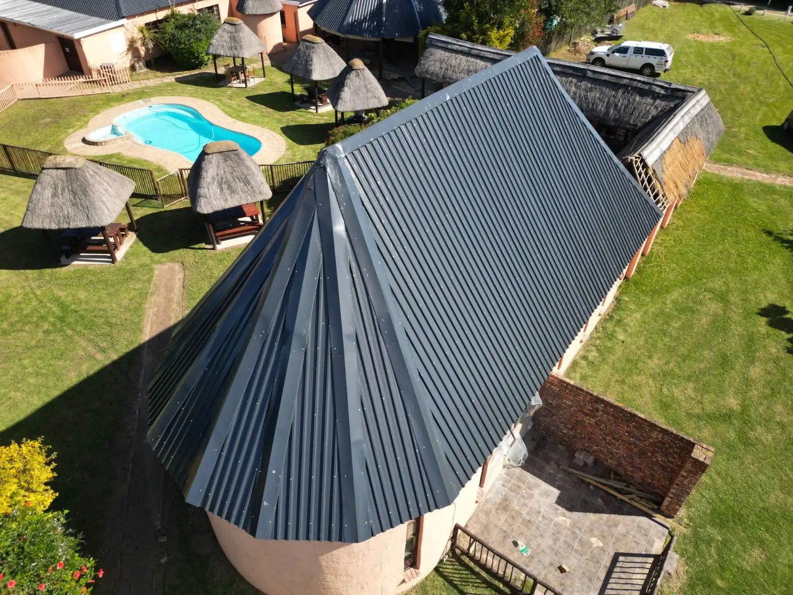
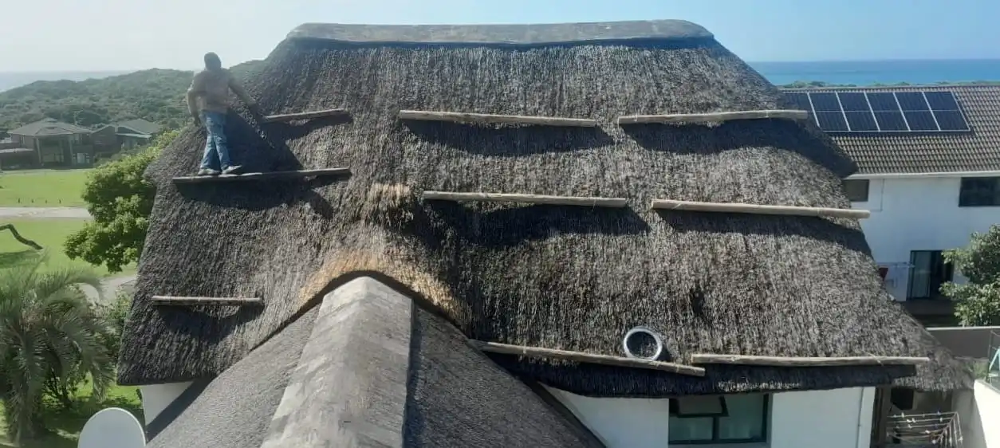
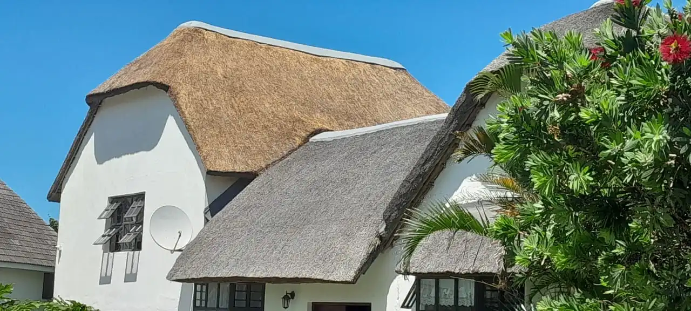
Planning a new thatch roof, lapa, deck or roof conversion? Message us on WhatsApp with a few details or photos of your property and we'll get back to you with a quote.
Get A Quote
Built to last, built with care.
Browse our thatching, decking and roof conversion projects across the Eastern Cape.